Lesson 16: headers-and-footers
Lesson 16: Headers and Footers
/en/word/columns/content/
Introduction
The header is a section of the document that appears in the top margin, while the footer is a section of the document that appears in the bottom margin. Headers and footers generally contain additional information such as page numbers, dates, an author's name, and footnotes, which can help keep longer documents organized and make them easier to read. Text entered in the header or footer will appear on each page of the document.
Watch the video below to learn more about headers and footers in Word.
[](../../../../../www.youtube.com/embed/lNdjuIYuB3o.webm)
To create a header or footer:
In our example, we want to display the author's name at the top of each page, so we'll place it in the header.
- Double-click anywhere on the top or bottom margin of your document. In our example, we'll double-click the top margin.
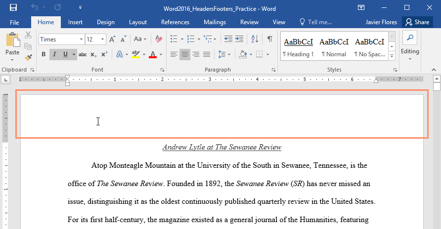
2. The header or footer will open, and a Design tab will appear on the right side of the Ribbon. The insertion point will appear in the header or footer.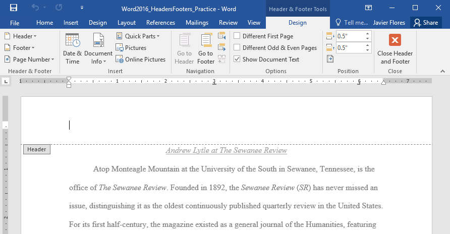
3. Type the desired information into the header or footer. In our example, we'll type the author's name and the date.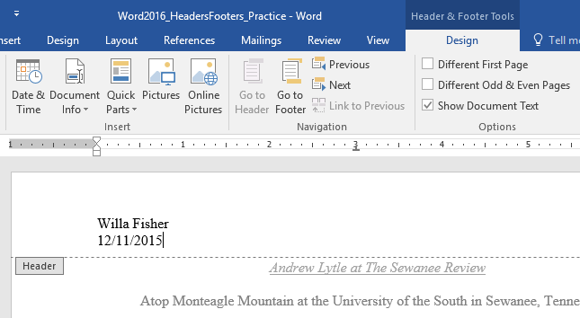
4. When you're finished, click Close Header and Footer. You can also press the Esc key.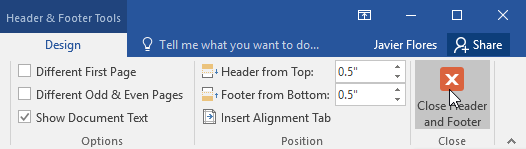
5. The header or footer text will appear.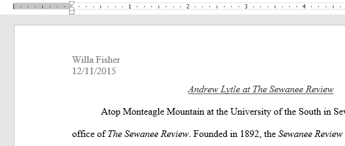
To insert a preset header or footer:
Word has a variety of preset headers and footers you can use to enhance your document's design and layout. In our example, we'll add a preset header to our document.
- Select the Insert tab, then click the Header or Footer command. In our example, we'll click the Header command.
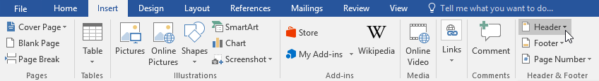
2. In the menu that appears, select the desired preset header or footer.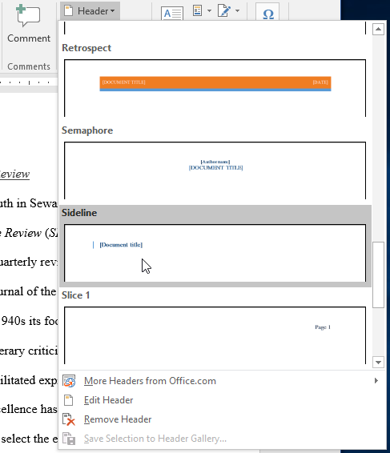
3. The header or footer will appear. Many preset headers and footers contain text placeholders called Content Control fields. These fields are good for adding information like the document title, author's name, date, and page number.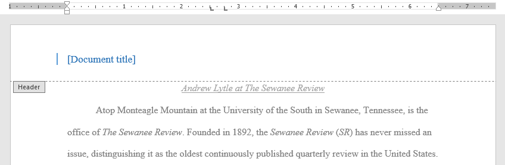
4. To edit a Content Control field, click it and type the desired information.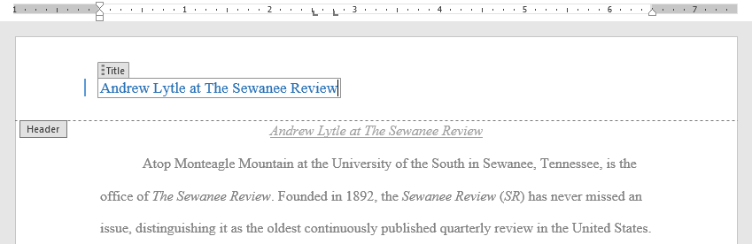
5. When you're finished, click Close Header and Footer. You can also press the Esc key.If you want to delete a Content Control field, right-click it and select Remove Content Control from the menu that appears.
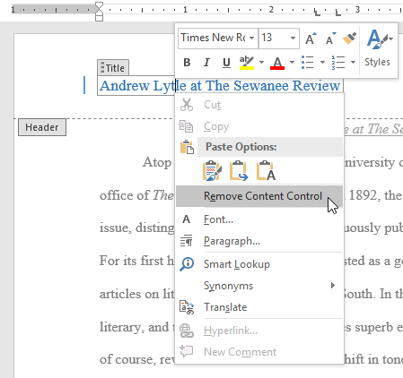
Editing headers and footers
After you close the header or footer, it will still be visible, but it will be locked. Simply double-click a header or footer to unlock it, which will allow you to edit it.
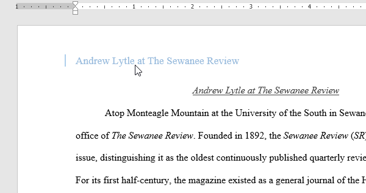
Design tab options
When your document's header and footer are unlocked, the Design tab will appear on the right side of the Ribbon, giving you various editing options:
- Hide the first-page header and footer: For some documents, you may not want the first page to show the header and footer, like if you have a cover page and want to start the page numbering on the second page. If you want to hide the first-page header and footer, check the box next to Different First Page.
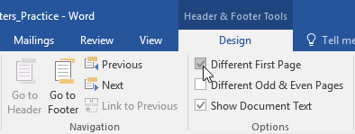
* Remove the header or footer: If you want to remove all information contained in the header, click the Header command and select Remove Header from the menu that appears. Similarly, you can remove a footer using the Footer command. * Page Number: You can automatically number each page with the Page Number command. Review our Page Numbers lesson to learn more.
* Page Number: You can automatically number each page with the Page Number command. Review our Page Numbers lesson to learn more.
 * Additional options: With the commands available in the Insert group, you can add the date and time, document info, pictures, and more to your header or footer.
* Additional options: With the commands available in the Insert group, you can add the date and time, document info, pictures, and more to your header or footer.
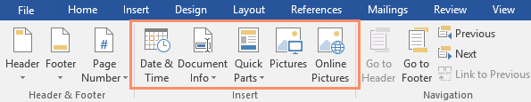
To insert the date or time into a header or footer:
Sometimes it's helpful to include the date or time in the header or footer. For example, you may want your document to show the date when it was created.
On the other hand, you may want to show the date when it was printed, which you can do by setting it to update automatically. This is useful if you frequently update and print a document because you'll always be able to tell which version is the most recent.
- Double-click anywhere on the header or footer to unlock it. Place the insertion point where you want the date or time to appear. In our example, we'll place the insertion point on the line below the author's name.
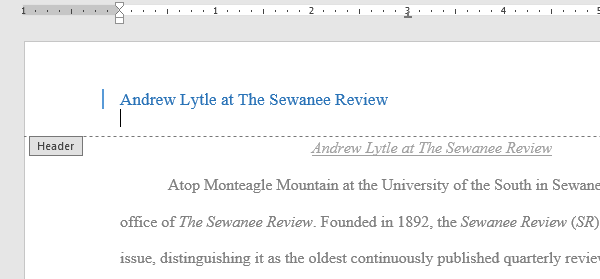
2. The Design tab will appear. Click the Date & Time command.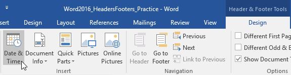
3. The Date and Time dialog box will appear. Select the desired date or time format. 4. Check the box next to Update automatically if you want the date to change every time you open the document. If you don't want the date to change, leave this option unchecked. 5. Click OK.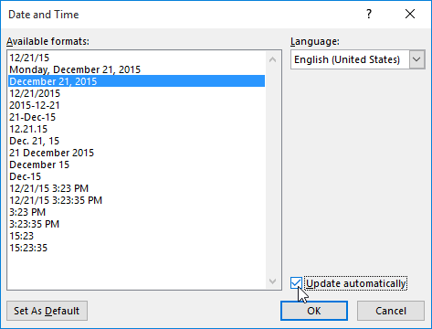
6. The date will appear in the header.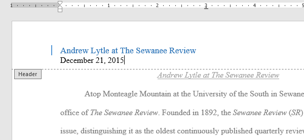
Challenge!
- Open our practice document. If you've already downloaded our practice document to follow along with the lesson, be sure to download a fresh copy by clicking the link in this step.
- Open the header.
- Choose Align Right on the Home tab and type your name.
- Below your name, use the Date & Time command on the Design tab and insert the date using whatever format you want.
- In the footer section, insert the preset footer Grid. If your version of Word doesn't have a Grid preset, you can choose any available preset.
- Close the header and footer.
- When you're finished, your page should look something like this:
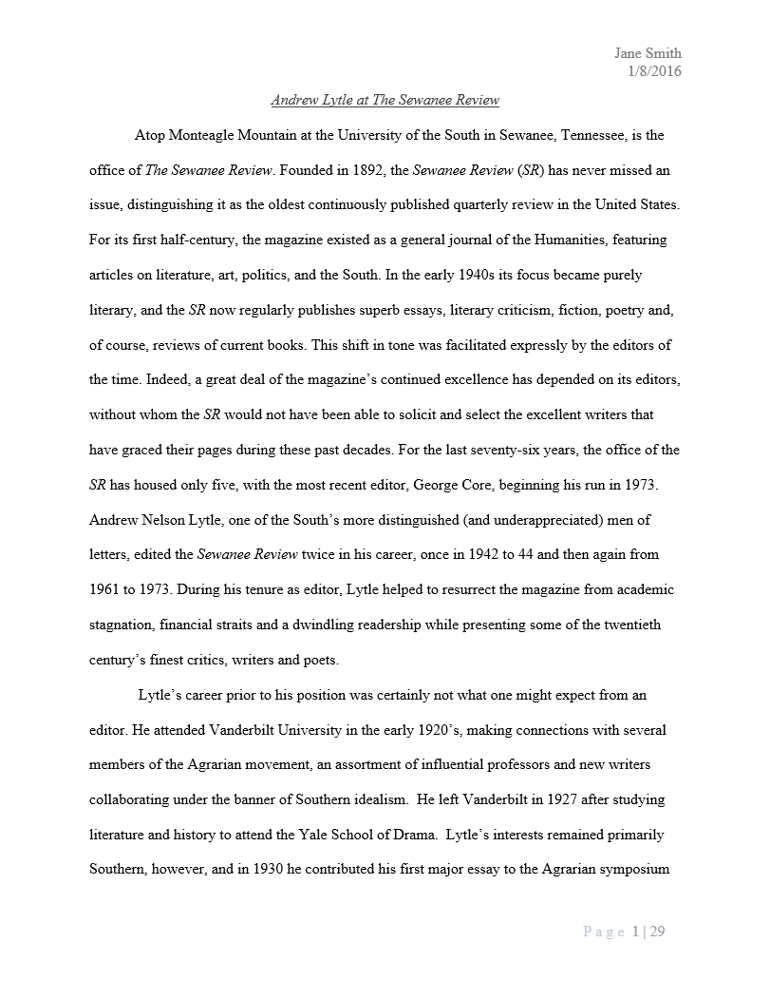
/en/word/page-numbers/content/